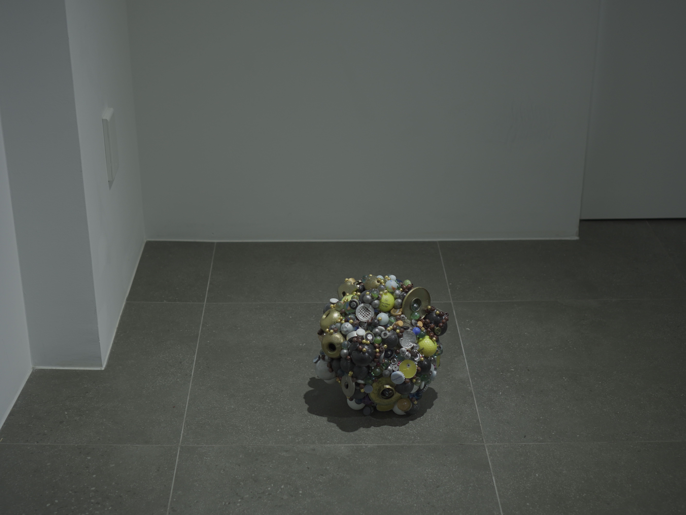
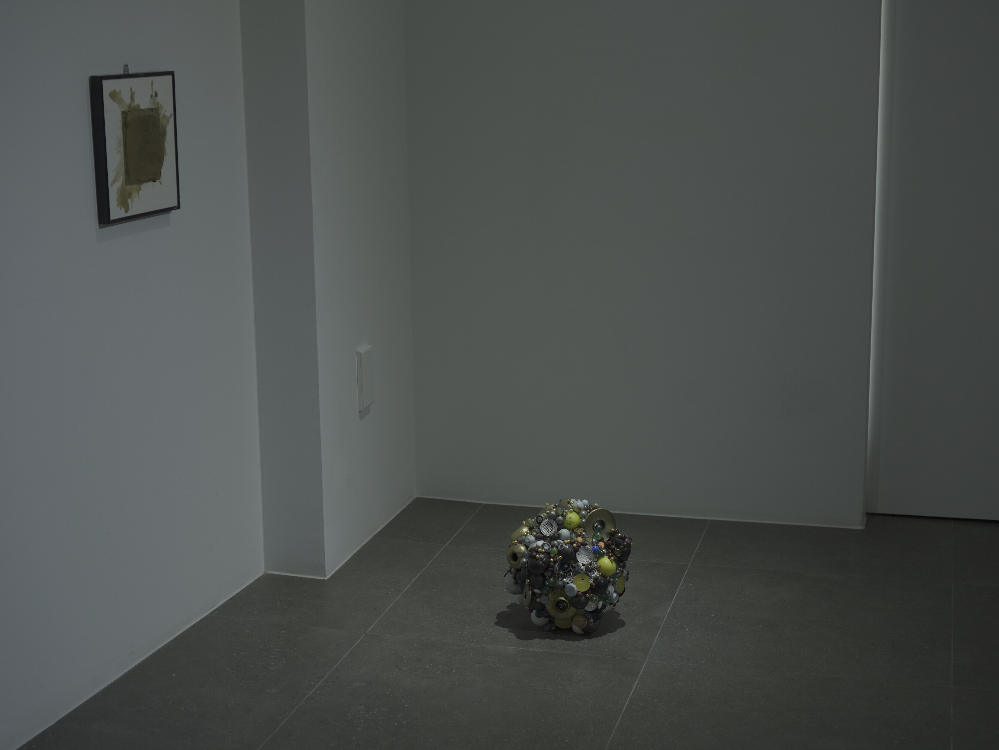
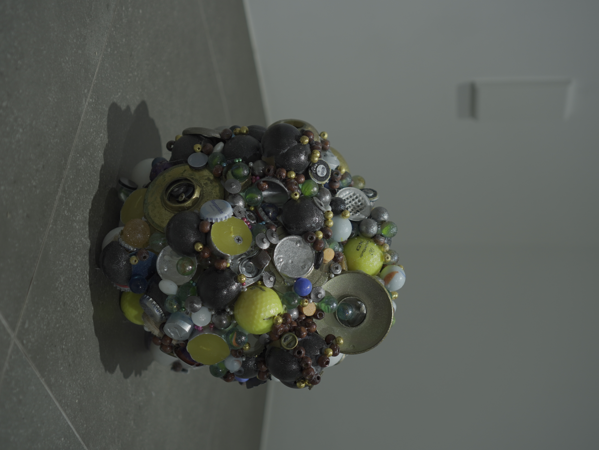

<점상>
구슬, 탁구공, 문 손잡이, 커피 캡슐 등 혼합 매체, 26*28*27 (cm). 2026.
<점상>은 불안의 존재방식에 대해 말한다. 소재, 용도, 맥락 등… 상관관계를 찾기 힘든 둥근 물체들이 한데 응집되어있다. 각각의 물체들은 본래 기능과 이름이 있지만, 이 군집 안에서는 그것들이 흐려진 채 전체의 알 수 없는 형상만을 이룬다. 이 형상은 설명하기 어려운 것의 존재방식을 떠올리게 한다.
작가가 느끼는 감각이나 상태와 같은 것은, 그것을 이루어 낸 사건들을 일일이 되짚는다 해도 명확한 하나의 무언가로 규명할 수는 없다. 수많은 사건, 감각, 기억 등은 독립된 점으로 여겨진다. 그러나 그 점들이 모여 형성된 “설명할 수 없는 것”은 요소들이 각자의 맥락을 가진 채 다른 요소들과 뒤섞여 또 다른 하나의 상태를 만들어낸다. 이 구체의 오브제는 설명할 수 없는 것의 형상을 재현해내는 시도가 아니다. 서로 다른 것들이 관계 맺으며 만들어 내는 알 수 없는 상태를 물질 안에서 시험한 결과물이다. 구체는 그것들을 압축해 놓은 하나의 군집이자, 설명할 수 없는 것들과 관계 맺기 위해 만들어낸 물질적 덩어리이다.


